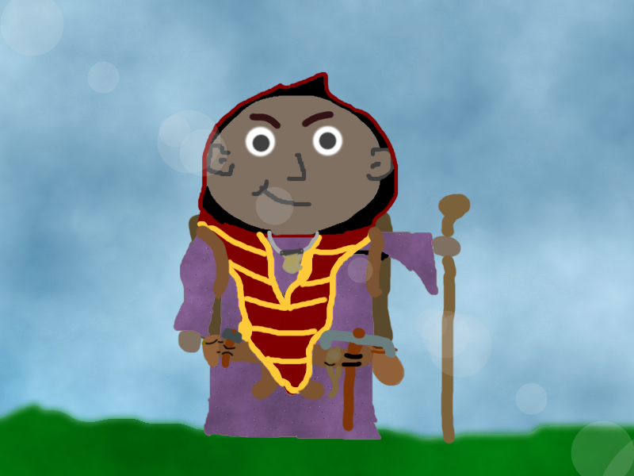

Tiefengnom. Zauberer (Wilde Magie).
tl;dr: Kann zaubern und weiß nicht warum. Will es aber wissen. Sucht "Large Luigi".
ruPurYrXrvrusu
- Geboren in der Nacht des "Fests des Sterns" ("Festival of the Star")
- Aufgewachsen als einziges Kind in einer Händlerfamilie (Kuntin & Baska Salztreiber) in Kuruntam
- Schon als Kind magische Kräfte unbekannter Herkunft
- Spielzeug aus dem Regal ins Kinderbett gezaubert
- Kronwar half mit seiner Magie dabei die phosphoreszierende Pilze (für das Fest des Sterns) "aufzuladen"
- Er nutze seine Kräfte auch um die Rubinsuche des "Rubinfests" ("Festival of the Ruby") zu gewinnen
- Hat sich oft die Hände verbrannt/geschockt/vereist beim Versuch seine Magie zu nutzen (Kleine Brandnarben an den Händen)
- Die Bewohner seines Dorfs geben sich mit der Erklärung zufrieden, dass Kronwar ein Zauberer ist; Nicht immer hat deren Magie einen bekannten Ursprung (Wilde Magie)
- Kronwar ist nicht zufrieden mit diesem "Unwissen"
- Seit er lesen kann auf der Suche nach der Herkunft seiner Kräfte
- Las viele Geschichtsbücher und sprach mit Gelehrten um Aufschluss zu finden (Tempel von Oghma)
- Will erst die Herkunft seiner Kräfte finden, bevor er auch ins (Salz-)Handel-Geschäft einsteigt; vor allem da seine Kräfte nicht immer vorhersehbar funktionieren
- In einer Nacht, als Kronwar alleine im Tempel war, besuchte ihn eine verhüllte Person und gab ihm einen Antwort-versprechenden Brief. Im Brief steht, dass Oghma auch nicht weiß, woher Kronwars Kräfte kommen und die Antwort nicht auf Toril zu finden ist; Wenn einer weiß, woher Kronwars Kräfte kommen, dann der "Große Luigi" ("Large Luigi")
- In der selben Nacht fand Kronwar eine kunstvolle Messerscheide; Er vermutet, dass diese von der verhüllten Person verloren wurde.
- Die Priester des Tempels sind sich einig, dass diese Person der Avatar Oghmas war um Kronwar auf eine Reise zu schicken
- Kronwar ist skeptisch... Wegen der Messerscheide vermutet er eher (Anhänger von) Mask um Unruhe im Tempel von Oghma zu stiften
- Trotzdem ist Kronwar nun auf der Suche nach dem Großen Luigi...